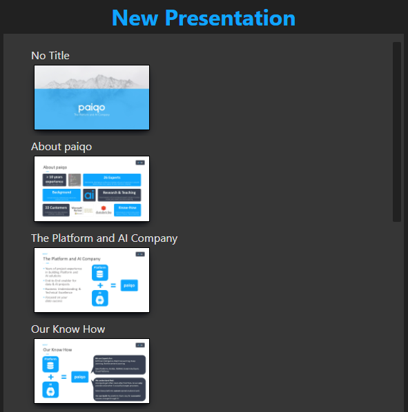

Information
Important Informationen:
Technical terms
PresentationMaster
This a PowerPoint presentation (pptx file) from which slides will be copied.
UID
This a string of at least 5 random urlSafe ASCII-characters in the notes of a slide.
The UIDs that are created from this tool, will be 22 character long.
Hidden Slides
Those are slides wich are set to hidden in PowerPoint.
Sections
Those are sections created in PowerPoint which contain slides.
Information
When the program reads/write files on a cloud it could lead to some problems.
The slides in the PresentationMasters need to have UIDs in the notes.
A UID contains at least 5 random urlSafe ASCII-characters.
One could look like this: "UID:BA4gQ68firnv4lhG_uNHaQ" .
When the scan finds a slide without a UID or one that is to short the program will warn you.
It will open a window where you see all the slides with a incorrect UID.
You have the option fix it by yourself or let the program fix it for you.
The slides with incorrect UIDs will receive newly generated UIDs.
All UIDs need to be unique. The program will warn you if there are duplicated UIDs.
It will open a window where you see all the slides with the same UID.
You are able to select one slide or both and tell the program to fix the problem.
The selected slides will receive a newly generated UID.
If you want to user placeholders, you need to format them like this:
~$Placeholder$~
First Setup
Open the option in Menu > Option > Open Options or with "Ctrl/Cmd + O".
Add a new language. Eg. "en".
Select the newly added language and add a presentationMaster with the add button.
On the right side of the input field click on the three dots to select a pptx-File.
After that exit the options with the save Button.
In the main window you can select a language next to presentations.

When a language is selected, you can scan the presentationMasters from the selected language.
You can scan in Menu > File > Scan or with "Ctrl/Cmd + I".
Now the setup is complete.
Create Presentation
When you successfully scanned a presentation you should see the sections of the presentation.
You can open the section with the arrow button to see all the slides.
With the plus or minus you can select or deselect all slides.
Depending on your settings the hidden slides will be included or not.
All selected slides will appear on the right side of the GUI.
You are able to drag these slides to the desired position.
When you're done selecting slides you can click on the export button in the bottom right.
If you selected a slide with placeholders a window will open where you need to set values for them.
When you filled out all inputs an click on the set values button the export window will open.
If you didn't select a slide with placeholders the export window will open immediately.

Here you need to enter a name for your new presentation.
You can change the folder where the new presentation will be saved.
By default the program will pick the path from your settings.
You can then decide if you want to save this presentation as a preset.
You can change the folder where the preset will be saved (Default from settings).
The name of the Preset will be the name of the presentation.

You can also create a PDF file from the new presentation.
The PDF will be saved at the same location where your new presentation will be saved.
When you click export the Programm will copy all selected slides into a new Presentation.
Load File
You can load presets or presentation with slides from the presentationMaser to edit this presentation.
To load a file you need to click on the load file button and select a .json or .pptx file.

When the file you chose is valid the slides in that preset or presentation will be automatically selected.
Values for the placeholders will already be filled if you loaded a generated Preset.
Update
If you want to update your slides in the PresentationMaster you need to do the following.
Put all Presentation that you want to be scanned for updates in a folder.
Then you need to scan a folder under Menu > File > Scan Folder.
Select the folder where your presentations are saved.
When the program found slides that can be updated it will open a new Window.
There you will see the original and all the different versions it found.
You can select one of the version and this slide will be updated in the presentationMaster.
When the Programm found new slides it will also open a window.
There you can select all the slides that you want to be added.
You need to select a presentation where the slides will be added.
Options

Default export Location
Here you can set the default location where your created presentations will be saved.
Meta-Json
In this json all the necessary information from a scan will be saved.
You can change where this file will be created and saved.
Meta-pics Location
The pictures that will be created from the slides will be saved in this folder.
You can change where the pictures will be created and saved.
Backup Location
Here you can set the location where Backups will be saved that will be created by the program.
Include Hidden Slides
You can toggle if the hidden slides should be included in the selection of the whole section.
Language

You can select for wich language you want to edit the presentation Masters or add a new language.
The presentationMasters of the selected language will be displayed in the container below language.
You can select a pptx-File as a PresentationMaster.